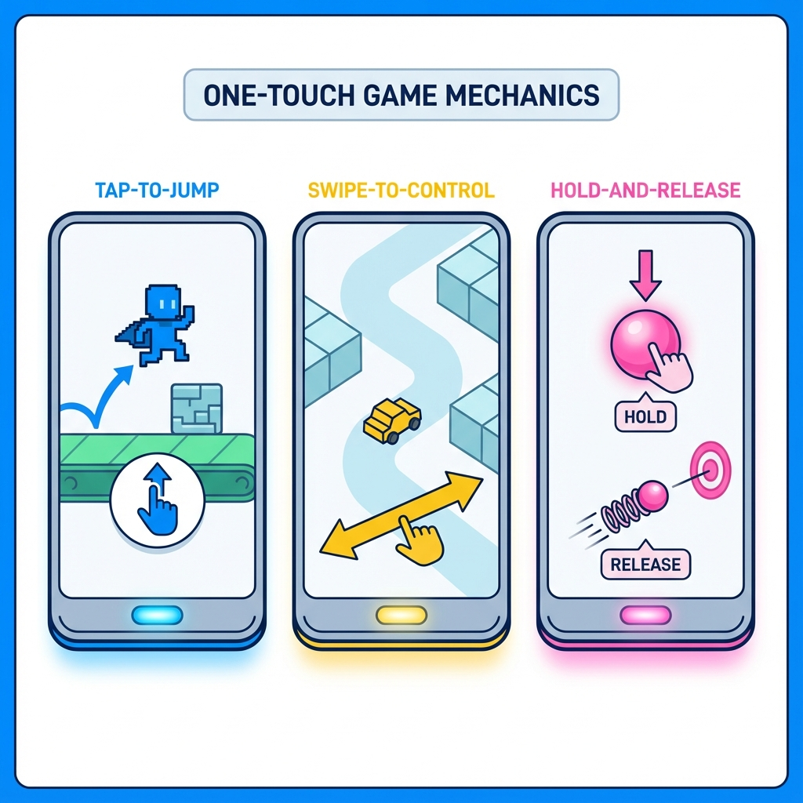
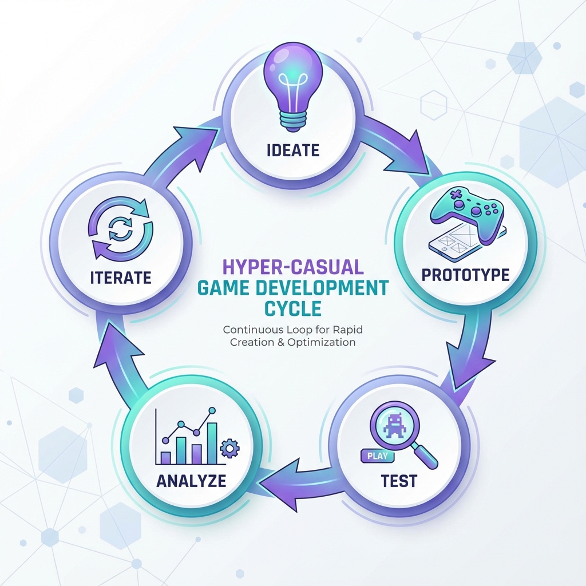
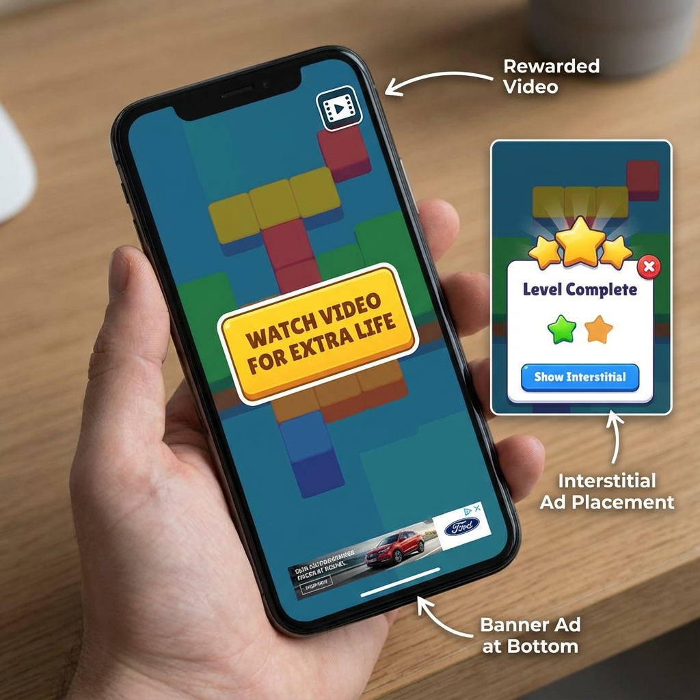
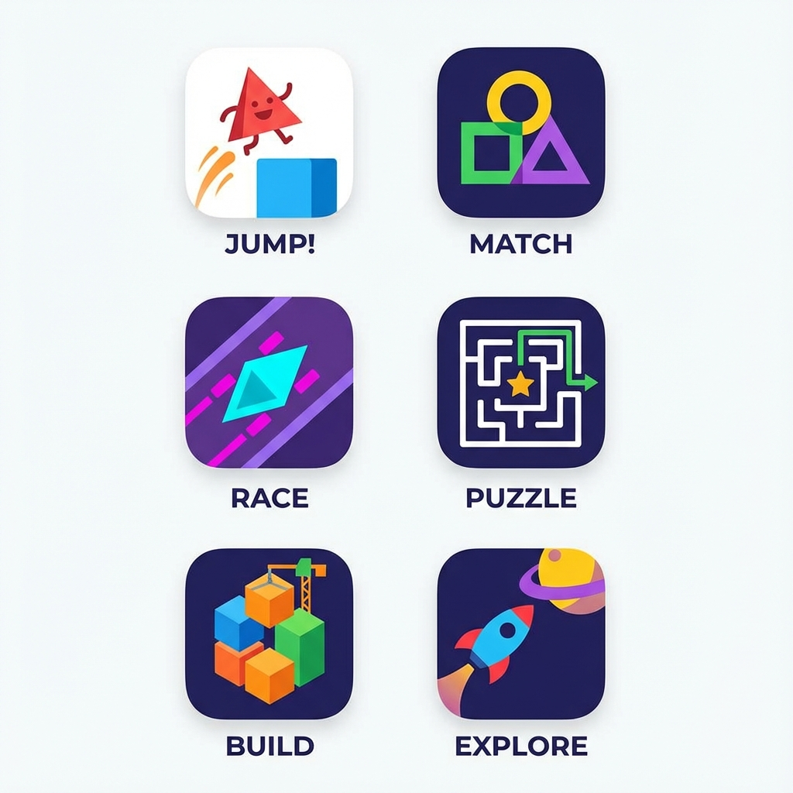

What Are Hyper-Casual Games?
Hyper-casual games are simple, addictive mobile games that anyone can play within seconds of downloading. These games feature minimalist design, one-touch controls, and short gameplay sessions that make them perfect for quick entertainment during commutes or breaks. Popular examples include Flappy Bird, Fruit Ninja, and Stack, which have collectively generated millions of downloads worldwide.
The hyper-casual gaming market continues to dominate mobile gaming in 2026, accounting for a significant portion of app store downloads. As a Pakistani game developer, entering this market offers tremendous opportunities due to low development costs and high viral potential.
Core Design Principles for Hyper-Casual Success
Simple Yet Engaging Mechanics
The foundation of every successful hyper-casual game is a single, intuitive mechanic that players understand immediately. Your game should require no tutorial—players should grasp the objective within 3-5 seconds of opening the app. Focus on one-touch or swipe controls that work seamlessly on both Android and iOS devices.
Popular mechanics include tapping to jump, swiping to change direction, holding to grow, and releasing to shoot. The key is making the action feel satisfying through responsive controls and immediate visual feedback. Test your core mechanic extensively before adding any additional features.
Visual Clarity and Aesthetic Appeal
Hyper-casual games need clean, uncluttered visuals that communicate gameplay instantly. Choose bright, contrasting colors that pop on mobile screens and ensure all interactive elements are clearly distinguishable from the background. Minimalist art styles not only look modern but also reduce development time and file size—crucial factors for app store optimization.
Your color palette should consist of 3-4 primary colors maximum to maintain visual coherence. Avoid realistic graphics in favor of flat design, geometric shapes, or simple 3D models that render quickly on low-end Android devices common in markets like Pakistan.

Development Process and Technical Considerations
Choosing the Right Game Engine
For hyper-casual game development, Unity remains the industry standard due to its cross-platform capabilities and extensive asset store. Unity allows you to build once and deploy to both Android and iOS with minimal adjustments, significantly reducing development time. Alternative engines like Godot offer free, open-source solutions that work well for 2D hyper-casual games.
Optimize your game for devices with as little as 2GB RAM and older processors. The Pakistani market includes many budget smartphones, so ensuring smooth performance on lower-end devices expands your potential audience dramatically. Test on actual budget devices, not just emulators, to identify performance bottlenecks.
Rapid Prototyping and Testing
The hyper-casual development cycle emphasizes speed—most successful studios prototype 10-20 game concepts before finding one worth publishing. Spend no more than 2-3 days building a playable prototype that demonstrates your core mechanic. Use placeholder graphics and focus entirely on whether the gameplay feels fun and addictive.
Test your prototype with real users immediately through soft launches or focus groups. Track metrics like Day 1 retention rate (aim for 40%+ for hyper-casual), average session length (2-3 minutes ideal), and Cost Per Install (CPI) to determine if your game has viral potential before investing in full production.
Monetization Strategies That Actually Work
Ad-Based Revenue Models
Hyper-casual games rely primarily on advertising revenue rather than in-app purchases. Implement rewarded video ads that offer players extra lives, power-ups, or currency in exchange for watching 15-30 second advertisements. These ads generate higher revenue per impression while maintaining positive user experience.
Strategic ad placement is crucial—show interstitial ads after every 2-3 game rounds, not after every single attempt. Too many ads frustrate players and increase uninstall rates, while too few leave revenue on the table. A/B test different ad frequencies to find the optimal balance for your specific game.
Optional In-App Purchases
While not the primary revenue source, offering simple IAPs like ad removal ($2-3) or cosmetic skins can supplement advertising income. Keep purchase options minimal—hyper-casual audiences expect free gameplay and resist complex monetization schemes. Focus 90% of your revenue strategy on ads and treat IAPs as a bonus for engaged players.
Publishing and App Store Optimization
Perfecting Your App Store Presence
Your app icon is the single most important visual asset for downloads. Design a simple, recognizable icon that communicates your game's core mechanic at a glance and stands out in crowded app store searches. Test multiple icon variations through A/B testing platforms to identify which generates the highest conversion rate.
Write a compelling app description that front-loads your most important keywords in the first 2-3 sentences. Include phrases like "addictive puzzle game," "one-touch controls," and "free casual game" that match common search terms. Showcase 5-6 high-quality screenshots demonstrating actual gameplay, not marketing fluff or misleading scenarios.
Launch Strategy for Maximum Downloads
Soft launch your game in smaller markets first to gather data and refine gameplay before your global launch. Test in countries with similar demographics to your target audience—for Pakistani developers, consider soft launching in India, Bangladesh, or Southeast Asian markets. Use this phase to optimize ad placements, difficulty curves, and retention mechanics.
Leverage social media marketing on platforms popular in Pakistan like Facebook, Instagram, and TikTok to build pre-launch buzz. Create short gameplay videos showing satisfying moments, near-misses, and impressive scores that encourage sharing. Partner with local gaming influencers for authentic promotion that resonates with your target demographic.
Common Mistakes to Avoid
The biggest mistake new developers make is overcomplicating their hyper-casual game with unnecessary features. Resist the urge to add multiple game modes, complex progression systems, or detailed tutorials. Each additional feature dilutes your core mechanic and increases development time without proportionally increasing retention.
Another critical error is neglecting performance optimization—games that lag or crash on mid-range devices receive poor ratings and high uninstall rates. Allocate at least 20% of your development time to optimization, testing on a variety of real devices rather than relying solely on high-end development machines.
Measuring Success and Iteration
Track key performance indicators religiously from day one. Day 1, Day 7, and Day 30 retention rates tell you if players find your game genuinely engaging or just momentarily entertaining. For hyper-casual games, aim for Day 1 retention above 40%, Day 7 above 20%, and Day 30 above 10% to consider your game successful.
Monitor your Cost Per Install (CPI) against Average Revenue Per User (ARPU) to ensure profitability. If your CPI exceeds ARPU by day 7, your monetization needs adjustment or your game requires iteration to improve retention. Use analytics tools like GameAnalytics or Unity Analytics to identify exactly where players drop off and what levels prove too difficult.
The Future of Hyper-Casual Gaming
The hyper-casual market continues evolving with hybrid-casual games gaining traction in 2026. These games maintain simple core mechanics but add light progression systems and meta-features that improve long-term retention. Consider how you might evolve your hyper-casual concept into a hybrid-casual experience once you've proven the core mechanic works.
Pakistani game developers have unique opportunities to create culturally relevant hyper-casual games that resonate locally while maintaining global appeal. Incorporate familiar visual elements, local humor, or regional themes that differentiate your games in an oversaturated market while keeping mechanics universally understandable.